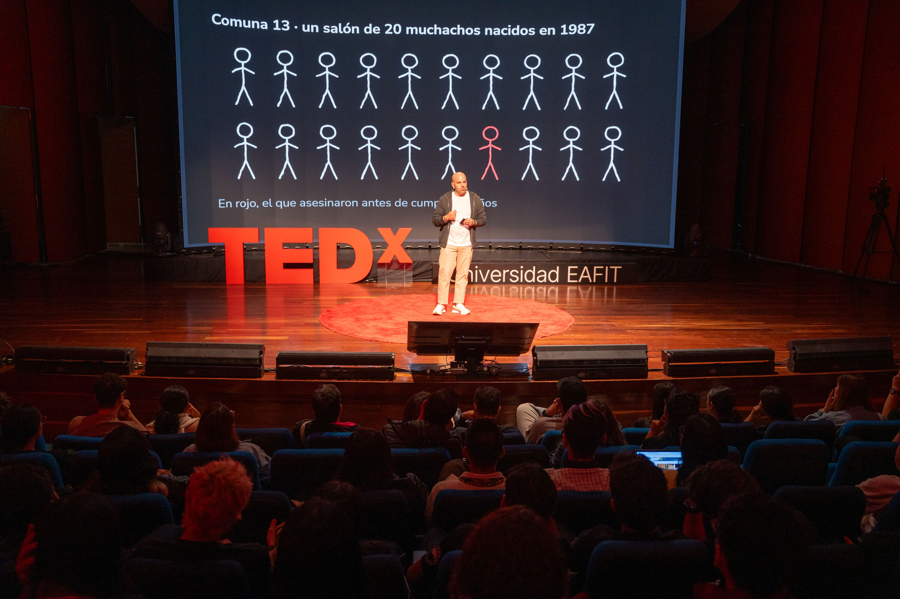

Santiago Tobón
I study how organized crime operates, how criminal groups govern communities and extract resources, and what governments can do about it. Most of my fieldwork takes place in Colombian cities, where I run experiments and collect original data.
Professor of Economics, Universidad EAFIT · Director, Centro de Valor Público · Chair, AL CAPONE

Latest
- Nov 2026Organized Crime and Violence accepted at the Annual Review of Economics
- Nov 2026State-Building in the City in print, American Political Science Review 120(4)
- Oct 2026Organized Crime as Urban Governance, chapter in a Peace in Our Cities compendium

Research
Criminal governance, policing, prisons, and illicit markets. Articles in the Review of Economic Studies, American Political Science Review, Review of Economics and Statistics, and Journal of the European Economic Association, among others.
Publications and working papers →Forthcoming book · Penguin Random House, 2027
COCAÍNA: Anatomía de un mercado prohibido
The book follows a gram of cocaine from a coca leaf on an Andean hillside to a line of powder in a European bar. It shows how prohibition sets the rules of the trade, and why each crackdown favors the organizations most capable of violence and corruption. The book is written in Spanish.
About the book →Valor Público
EAFIT's applied policy research center, which I direct. We design and evaluate public programs with governments, among them a yearly sequence of youth mental-health experiments with Medellín's Secretaría de Juventud.
Projects →Writing
Policy notes and reports, columns in El Colombiano and La Silla Vacía, pieces in VoxDev and Nada es Gratis, and press coverage of my research, including The Economist.
Writing and media →